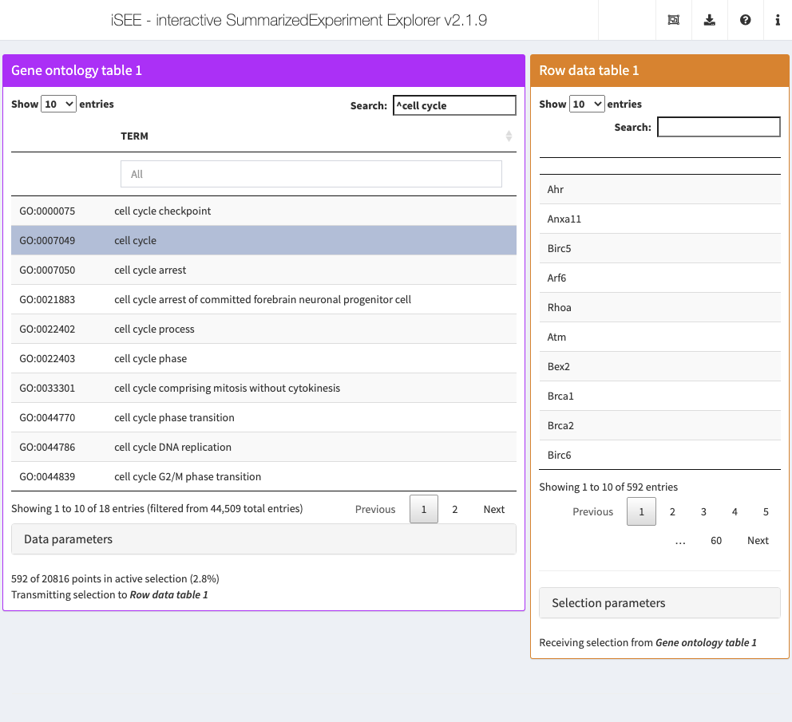

Chapter 8 Gene ontology table
8.1 Overview
Here, we will construct a table of GO terms where selection of a row in the table
causes transmission of a multiple selection of gene names.
The aim is to enable us to transmit multiple row selections to other panels based on their membership of a gene set.
This is a fairly involved example of creating a Panel subclass as we cannot easily inherit from an existing subclass; rather, we need to provide all the methods ourselves.
Readers may also be interested in the fully fledged version of the proposed class in iSEEu.
8.2 Class basics
First, we define the basics of our new GOTable class.
This inherits from the virtual base Panel class as it cannot meet any of the contractual requirements of the subclasses,
what with the DataTable selection event triggering a multiple selection rather than a single selection.
We add some slots to specify the feature ID type and the organism of interest as well as for DataTable parameters.
library(iSEE)
library(S4Vectors)
setClass("GOTable", contains="Panel",
slots=c(
IDType="character",
Organism="character",
Selected="character",
Search="character",
SearchColumns="character"
)
)We also add some checks for these parameters.
allowable <- c("ENSEMBL", "SYMBOL", "ENTREZID")
setValidity2("GOTable", function(object) {
msg <- character(0)
if (!isSingleString(orgdb <- object[["Organism"]])) {
msg <- c(msg, sprintf("'Organism' should be a single string", orgdb))
}
if (!isSingleString(type <- object[["IDType"]]) || !type %in% allowable) {
msg <- c(msg, "'IDType' should be 'ENSEMBL', 'SYMBOL' or 'ENTREZID'")
}
if (!isSingleString(object[["Selected"]])) {
msg <- c(msg, "'Selected' should be a single string")
}
if (!isSingleString(object[["Search"]])) {
msg <- c(msg, "'Search' should be a single string")
}
if (length(msg)) {
return(msg)
}
TRUE
})We then specialize the initialize method to set reasonable defaults and create an approprpiate constructor.
setMethod("initialize", "GOTable", function(.Object,
Organism="org.Mm.eg.db", IDType="SYMBOL",
Selected="", Search="", SearchColumns=character(0), ...)
{
callNextMethod(.Object, IDType=IDType, Organism=Organism,
Selected=Selected, Search=Search,
SearchColumns=SearchColumns, ...)
})
GOTable <- function(...) new("GOTable", ...)8.3 Setting up the interface
We define the full name and desired default color for display purposes:
setMethod(".fullName", "GOTable", function(x) "Gene ontology table")
setMethod(".panelColor", "GOTable", function(x) "#BB00FF")We add our UI element for showing the gene set table, which is simply a DataTable object from the DT package.
Note that shiny also has a dataTableOutput function so care must be taken to disambiguate them.
setMethod(".defineOutput", "GOTable", function(x, ...) {
panel_name <- .getEncodedName(x)
tagList(DT::dataTableOutput(panel_name))
})We set up interface elements for changing the annotation parameters.
setMethod(".defineDataInterface", "GOTable", function(x, se, select_info) {
panel_name <- .getEncodedName(x)
list(
selectInput(paste0(panel_name, "_IDType"),
label="ID type:",
choices=allowable,
selected=x[["IDType"]]
),
selectInput(paste0(panel_name, "_Organism"),
label="Organism",
choices=c("org.Hs.eg.db", "org.Mm.eg.db"),
selected=x[["Organism"]]
)
)
})Our implementation will be a pure transmitter, i.e., it will not respond to row or column selections from other panels.
To avoid confusion, we can hide all selection parameter UI elements by specializing the .hideInterface() method:
8.4 Generating the output
We actually generate the output by specializing the .generateOutput() function,
using the GO.db package to create a table of GO terms and their definitions.
We also store the number of available genes in the contents -
this will be used later to compute the percentage of all genes in a given gene set.
setMethod(".generateOutput", "GOTable", function(x, se, ..., all_memory, all_contents) {
envir <- new.env()
commands <- c("require(GO.db);",
"tab <- select(GO.db, keys=keys(GO.db), columns='TERM');",
"rownames(tab) <- tab$GOID;",
"tab$GOID <- NULL;")
eval(parse(text=commands), envir=envir)
list(
commands=list(commands),
contents=list(table=envir$tab, available=nrow(se)),
varname="tab"
)
})We don’t actually depend on any parameters of x itself to generate this table.
However, one could imagine a more complex case where the GOTable itself responds to a multiple row selection,
e.g., by subsetting to the gene sets that contain genes in the selected row.
8.5 Creating the observers
We specialize .createObservers to define some observers to respond to changes in our new interface elements.
This also involves creating an observer to respond to a change in the selection of a DataTable row,
calling .requestActiveSelectionUpdate() to trigger changes in panels that are receiving the multiple row selection.
(We set up observers for the search fields as well, as a courtesy to restore them properly upon re-rendering.)
setMethod(".createObservers", "GOTable",
function(x, se, input, session, pObjects, rObjects)
{
callNextMethod()
panel_name <- .getEncodedName(x)
.createUnprotectedParameterObservers(panel_name,
fields=c("Organism", "IDType"),
input=input, pObjects=pObjects, rObjects=rObjects)
# Observer for the DataTable row selection:
select_field <- paste0(panel_name, "_rows_selected")
multi_name <- paste0(panel_name, "_", iSEE:::.flagMultiSelect)
observeEvent(input[[select_field]], {
chosen <- input[[select_field]]
if (length(chosen)==0L) {
chosen <- ""
} else {
chosen <- rownames(pObjects$contents[[panel_name]]$table)[chosen]
}
previous <- pObjects$memory[[panel_name]][["Selected"]]
if (chosen==previous) {
return(NULL)
}
pObjects$memory[[panel_name]][["Selected"]] <- chosen
.requestActiveSelectionUpdate(panel_name, session, pObjects, rObjects, update_output=FALSE)
}, ignoreInit=TRUE, ignoreNULL=FALSE)
# Observer for the search field:
search_field <- paste0(panel_name, "_search")
observeEvent(input[[search_field]], {
search <- input[[search_field]]
if (identical(search, pObjects$memory[[panel_name]][["Search"]])) {
return(NULL)
}
pObjects$memory[[panel_name]][["Search"]] <- search
})
# Observer for the column search fields:
colsearch_field <- paste0(panel_name, "_search_columns")
observeEvent(input[[colsearch_field]], {
search <- input[[colsearch_field]]
if (identical(search, pObjects$memory[[panel_name]][["SearchColumns"]])) {
return(NULL)
}
pObjects$memory[[panel_name]][["SearchColumns"]] <- search
})
})Note the use of callNextMethod() to ensure that observers of the parent class are created.
We also set ignoreInit=TRUE to avoid problems from ignoreNULL=TRUE when the observer is initialized before the table is rendered; otherwise, the NULL selection prior to table rendering will wipe out any initial setting for the Selected slot.
We set up a rendering expression for the output table by specializing .renderOutput().
This uses the renderDataTable() function from the DT package
(again, this has a similar-but-not-identical function in shiny, so be careful which one you import.)
Some effort is involved in making sure that the output table responds to the memorized parameter values of our GOTable panel.
setMethod(".renderOutput", "GOTable", function(x, se, ..., output, pObjects, rObjects) {
callNextMethod()
panel_name <- .getEncodedName(x)
output[[panel_name]] <- DT::renderDataTable({
.trackUpdate(panel_name, rObjects)
param_choices <- pObjects$memory[[panel_name]]
t.out <- .retrieveOutput(panel_name, se, pObjects, rObjects)
full_tab <- t.out$contents$table
chosen <- param_choices[["Selected"]]
search <- param_choices[["Search"]]
search_col <- param_choices[["SearchColumns"]]
search_col <- lapply(search_col, FUN=function(x) { list(search=x) })
# If the existing row in memory doesn't exist in the current table, we
# don't initialize it with any selection.
idx <- which(rownames(full_tab)==chosen)[1]
if (!is.na(idx)) {
selection <- list(mode="single", selected=idx)
} else {
selection <- "single"
}
DT::datatable(
full_tab, filter="top", rownames=TRUE,
options=list(
search=list(search=search, smart=FALSE, regex=TRUE, caseInsensitive=FALSE),
searchCols=c(list(NULL), search_col), # row names are the first column!
scrollX=TRUE),
selection=selection
)
})
})8.6 Handling selections
Now for the most important bit - configuring the GOTable to transmit a multiple row selection to other panels.
This is achieved by specializing a series of .multiSelection*() methods.
The first is the .multiSelectionDimension(), which controls the dimension being transmitted:
The next most important method is the .multiSelectionCommands(), which tells iSEE() how to create the multiple row selection from the selected DataTable row.
It is expected to return a vector of commands that, when evaluated, creates a character vector of row names for transmission.
This has an option (index) to differentiate between active and saved selections, though the latter case is not relevant to our GOTable so we will simply ignore it.
We also need to protect against cases where the requested GO term is not found, upon which we simply return an empty character vector.
setMethod(".multiSelectionCommands", "GOTable", function(x, index) {
orgdb <- x[["Organism"]]
type <- x[["IDType"]]
c(
sprintf("require(%s);", orgdb),
sprintf("selected <- tryCatch(select(%s, keys=%s, keytype='GO',
column=%s)$SYMBOL, error=function(e) character(0));",
orgdb, deparse(x[["Selected"]]), deparse(type)),
"selected <- intersect(selected, rownames(se));"
)
})We also define some generics to indicate whether a DataTable row is currently selected, and how to delete that selection.
For the latter, we replace the selected row with an empty string to indicate that no selection has been made,
consistent with the actions of our observer in .createObservers().
setMethod(".multiSelectionActive", "GOTable", function(x) {
if (x[["Selected"]]!="") {
x[["Selected"]]
} else {
NULL
}
})
setMethod(".multiSelectionClear", "GOTable", function(x) {
x[["Selected"]] <- ""
x
})Finally, we define a method to determine the total number of available genes.
The default is to use the number of rows of the data.frame used in the datatable() call,
but that would not be right for us as it represents the number of gene sets.
Instead, we use the availability information that we previously stored in the contents during .generateOutput().
8.7 In action
Let’s put our new panel to the test using the sce object from Chapter 4.
We set up an iSEE instance where clicking on any row in the GOTable will subset RowTable1 to only those genes in the corresponding GO term.
got <- GOTable(PanelWidth=8L, Selected="GO:0007049", Search="^cell cycle")
rst <- RowDataTable(RowSelectionSource="GOTable1")
app <- iSEE(sce, initial=list(got, rst))